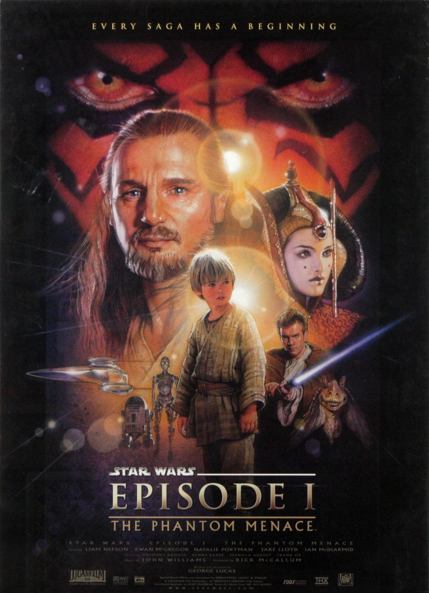
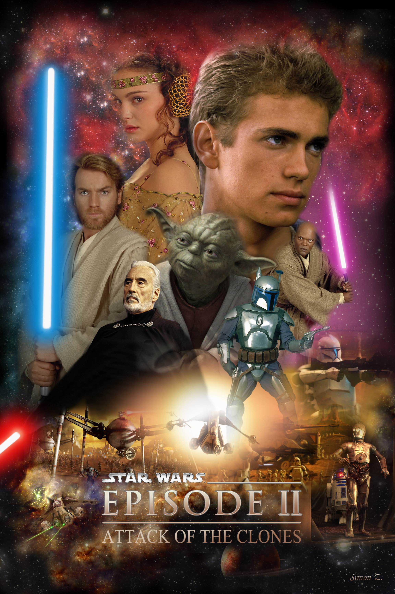
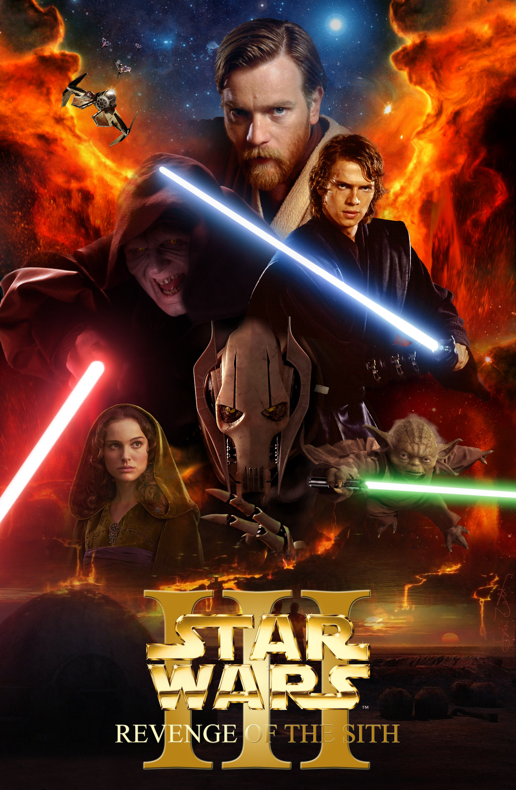
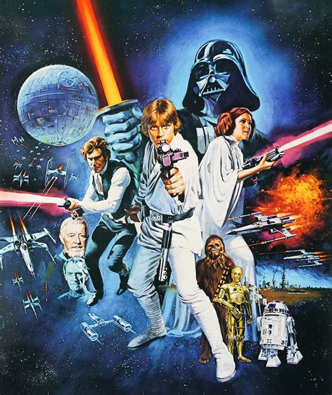
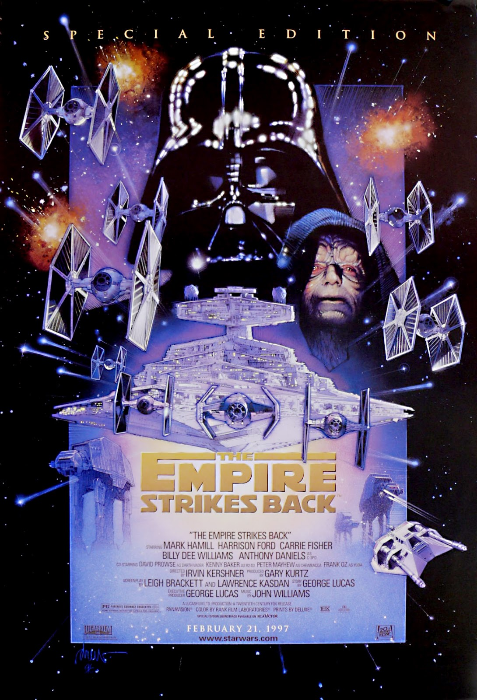
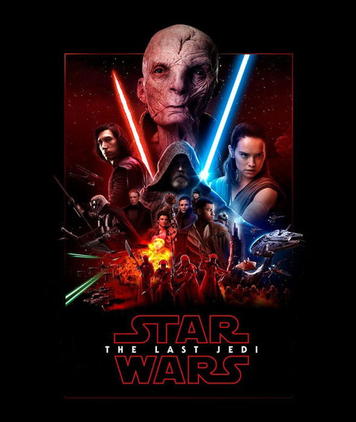
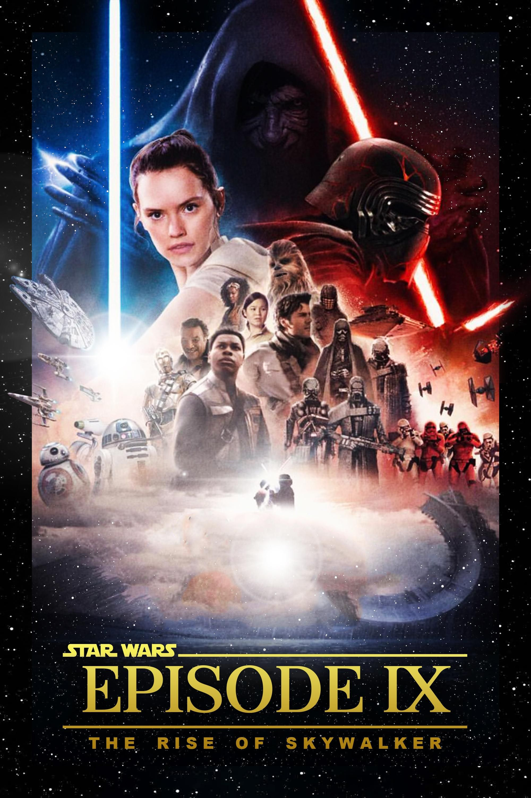

Die geldgierige Handelsföderation belagert den friedlichen Planeten Naboo der jungen Königin Amidala. Jedi-Meister Qui-Gon Jinn und sein Schüler Obi-Wan Kenobi werden vom Hohen Rat der Jedi zu Friedensverhandlungen geschickt. Als ihre Mission scheitert, fliehen die Jedi mit Amidala auf den Wüstenplaneten Tatooine. Dort lernen sie den neunjährigen Anakin Skywalker kennen, in dem Qui-Gon eine starke Veranlagung zur Macht erkennt. Er nimmt den Jungen mit, um ihn zum Jedi auszubilden.

Während Obi-Wan Kenobi den jugendlichen Anakin Skywalker zum Jedi-Ritter ausbildet und mit dem hitzköpfigen jungen Mann alle Hände voll zu tun hat, braut sich ein neuer Konflikt zusammen. Als Senatorin Amidala nur knapp einem Anschlag entgeht, werden Obi-Wan und Anakin zu Hilfe gerufen. Auf einem fernen Planeten treffen sie auf den mysteriösen Anführer der feindlichen Separatisten und eine gewaltige Armee geklonter Krieger. Anakin entwickelt derweil tiefere Gefühle für die schöne Ex-Königin.

Noch immer wüten die Klonkriege. Als Kanzler Palpatine von den Separatisten entführt wird, unternehmen die beiden Jedi Obi-Wan Kenobi und Anakin Skywalker einen gewagten Rettungsversuch. Die Befreiung Palpatines gelingt, doch die Kluft zwischen diesem und dem Jedi-Rat vergrößert sich immer mehr. Der ehrgeizige Anakin, der sich vom Jedi-Rat nicht ausreichend gewürdigt fühlt, wird von dem korrupten Kanzler mehr und mehr auf seine Seite gezogen.

Der junge Luke Skywalker lebt auf der Farm seines Onkels auf dem Wüstenplaneten Tatooine. Eines Tages findet er in einem Roboter eine geheime Botschaft. Er macht sich auf die Suche nach dem eigentlichen Empfänger der Botschaft, einem gewissen Obi-Wan, der unter dem Namen Ben Kenobi als Eremit auf Tatooine lebt. Von ihm wird Luke in die Grundzüge der Macht eingewiesen und findet sich plötzlich auf der Seite der Rebellen im Kampf gegen das Imperium und den finsteren Darth Vader wieder.Ich bin fabian

Die Rebellen sehen sich nach einem Angriff von Darth Vader gezwungen, ihren Stützpunkt auf dem Eisplaneten Hoth zu evakuieren. Luke Skywalker macht sich auf den Weg zu dem weisen Jedimeister Yoda, um sich von ihm in der Macht ausbilden zu lassen. Darth Vader gelingt es indes, Han Solo und Prinzessin Leia gefangen zu nehmen. Als Luke seinen Freunden zu Hilfe eilt, tappt er direkt in Vaders Falle. Luke und Vader finden sich in einem Duell wieder, das eine böse Überraschung für Luke bereithält.

Der zweite Todesstern, der den Untergang der Rebellen besiegeln soll, steht kurz vor der Vollendung. Die Rebellen beordern ihre gesamten Streitmächte zum Mond Endor, um von dort gegen das Imperium zu kämpfen. Unterdessen kehrt Luke nach Dagobah zurück, um seine Ausbildung zum Jedi-Ritter zu vollenden. Von Yoda erfährt er, dass er sich dazu ein letztes Mal seinem Vater, Darth Vader, stellen muss. Auf dem Todesstern kommt es erneut zum Duell zwischen Vater und Sohn.

30 Jahre nach dem Sieg über Darth Vader und das Imperium steht die Galaxie vor einer neuen Bedrohung. Der sinistere Kylo Ren bedroht den Frieden, denn er will das Erbe Darth Vaders antreten und dessen Werk fortsetzen. Finn, ein Deserteur von den Sturmtruppen, der nach seiner Fahnenflucht dem Widerstand geholfen hat, der wagemutige Pilot Poe Dameron und die widerspenstige Plünderin Rey stellen sich ihm entgegen. Hilfe erhalten sie von dem legendären Rebellenhelden Han Solo und seinen Gefährten.

Luke Skywalker hat sich im Alter auf eine einsame Insel zurückgezogen. Doch mit dem Frieden ist es vorbei, als Rey auftaucht, um von ihm den Umgang mit der Macht zu erlernen. Ihr Wunsch ist es, von ihm in der Kunst der Jedi ausgebildet zu werden. Luke ist zu einer Entscheidung gezwungen, die Reys Leben für immer verändern wird. Unterdessen liefern sich Kylo Ren und seine Erste Ordnung einen erbitterten Kampf mit Leia und den Kämpfern des Widerstands um die Vorherrschaft in der Galaxie.

Ich bin fabian